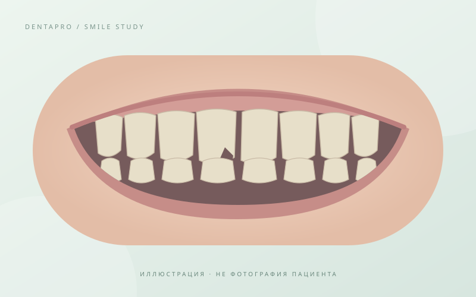
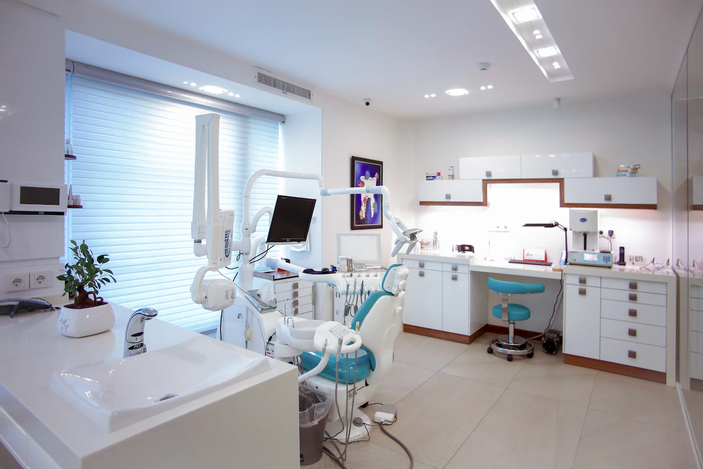
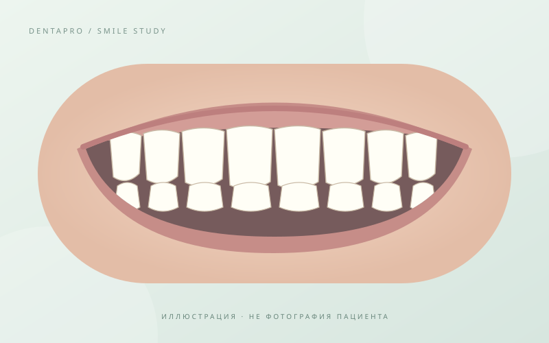
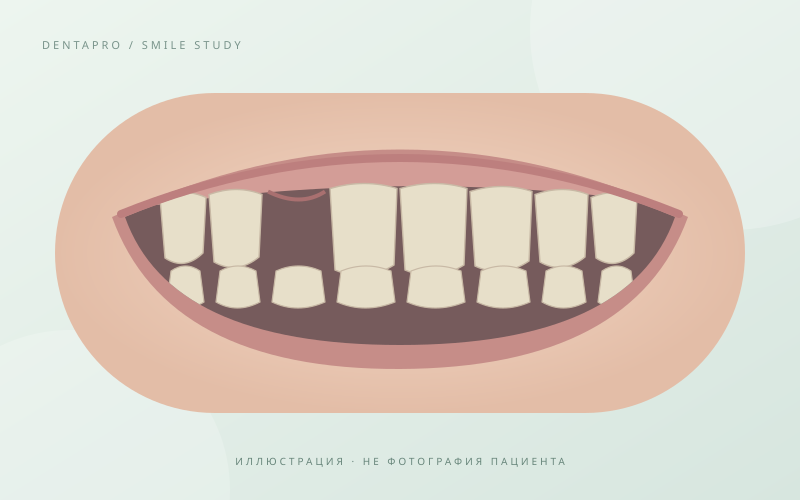

ДоПослеЭСТЕТИЧЕСКАЯ СТОМАТОЛОГИЯ
Эстетическая реставрация передних зубов
Задача: восстановить сколотый край и гармоничные пропорции улыбки, сохранив естественный вид.
Проводим точную 3D-диагностику за 15 минут. Используем современную компьютерную анестезию и европейские материалы.
Сначала знакомимся. Затем выбираем лечение.

Точная диагностика ✦ Бережное лечение ✦ Понятный план
УСЛУГИ И СТОИМОСТЬ
Фиксируем стоимость лечения в плане
до начала процедур. Вы всегда знаете,
за что платите.
Указаны ориентировочные цены. Точный план — после осмотра.
ПЛАН ВАШЕЙ УЛЫБКИ
Ответьте на три вопроса — подготовим
ориентировочный план и закрепим подарок.
Выберите один вариант — перейдём к следующему вопросу.
Оставьте номер телефона, чтобы получить ориентировочную смету и закрепить за собой бесплатный 3D-снимок.
Смету подготовит координатор по вашим ответам. Точная стоимость и необходимость КТ определяются после осмотра.
ЗАЯВКА ОТПРАВЛЕНА
Мы получили ваши ответы. Администратор свяжется с вами в часы работы, обсудит ориентировочную смету и условия получения 3D-снимка.
Ежедневно 09:00–21:00МАЛЕНЬКИЕ ДЕТАЛИ. БОЛЬШАЯ РАЗНИЦА.
Потяните шторку, чтобы сравнить.
Бережно восстанавливаем эстетику и функцию.
Иллюстративные примеры: схемы показывают идею лечения, а не результаты реальных пациентов. Сроки и специалисты указаны для демонстрации.

ДоПослеЗадача: восстановить сколотый край и гармоничные пропорции улыбки, сохранив естественный вид.


ДоПослеЗадача: восполнить отсутствующий зуб и вернуть целостность зубного ряда с помощью импланта и коронки.
Каждый случай индивидуален. Возможность лечения, сроки и результат обсуждаются с врачом на консультации.
ЛЮДИ, КОТОРЫЕ ЗАБОТЯТСЯ
Внимательно выслушают. Понятно объяснят.
Помогут принять взвешенное решение.
Демонстрационные профили: имена, стаж и специализации — примеры; фотографии Unsplash не изображают сотрудников клиники.
 Стаж 14 лет
Стаж 14 летГлавный врач · хирург-имплантолог
Планирование имплантации, костная пластика и комплексное восстановление зубов. Объясняет каждый этап простыми словами.
 Стаж 11 лет
Стаж 11 летСтоматолог-терапевт · микроскопист
Лечение каналов под увеличением и бережная реставрация зубов. Внимание к деталям и спокойствие на каждом приёме.
 Стаж 12 лет
Стаж 12 летСтоматолог-ортопед
Керамические виниры, коронки и протезирование на имплантах. Индивидуальный подход к форме и эстетике улыбки.
ДОВЕРИЕ В ДЕТАЛЯХ
О лечении, которое становится
спокойным и понятным опытом.
Рейтинги — из демонстрационного задания, отзывы ниже — примеры текстов. Они не являются подтверждёнными отзывами пациентов.
Долго откладывала визит из-за страха. На консультации врач показала снимок и спокойно объяснила, что нужно сделать. До лечения согласовали стоимость, и никаких неожиданных пунктов в конце не появилось. Особенно понравилось, что можно было сделать паузу и задать вопросы.
Пришёл с множеством вопросов про восстановление зуба. Получил понятный план с этапами и стоимостью. Администратор заранее напоминал о визитах, врач подробно рассказывал, что будет дальше. Для меня главное — ощущение, что со мной разговаривают и ничего не навязывают.
Была на профессиональной гигиене. Понравились аккуратность врача и внимание к моим ощущениям. После процедуры разобрали домашний уход: как пользоваться нитью и что подходит именно мне. Светлая клиника, приём начался вовремя, общение очень доброжелательное.
СПОКОЙНЕЕ, КОГДА ВСЁ ПОНЯТНО
Не нашли свой вопрос?
Мы с удовольствием ответим лично.
Перед процедурой врач обсудит с вами обезболивание, ваши ощущения и особенности здоровья. Способ анестезии подбирается индивидуально. Во время приёма можно попросить паузу — важно, чтобы вы чувствовали себя спокойно.
Попросите администратора рассказать о доступных программах. Срок, сумма, участие банка и требования к оформлению зависят от действующих условий. Все платежи и итоговая стоимость согласуются до подписания договора. Условия программы в демонстрационной версии требуют подтверждения клиникой.
Администратор поможет уточнить, какие документы клиника может подготовить для оформления вычета. Возможность получения и размер вычета зависят от вашей ситуации и действующих правил. Уточните список документов при записи.
Условия гарантии зависят от вида лечения и фиксируются в договоре. Врач объяснит, на что распространяется гарантия и какие рекомендации важно соблюдать. Ознакомиться с условиями можно до начала процедур.
Оставьте заявку на первичный осмотр или позвоните администратору. Расскажите в общих словах, что вас беспокоит: поможем выбрать направление и удобное время. План лечения составляется после консультации.
БУДЕМ РАДЫ ВСТРЕЧЕ
Подберём удобное время и ответим на вопросы.
Схема условная. Адрес — из демонстрационного задания.